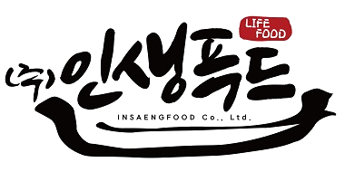

인생푸드 AX 자문 계획
2회 자문 요약 및 4분기 실행 로드맵 제안
강정구, 라이너 AI 전략 총괄
AX2026 Q4 ROADMAP
9월 내부 논의를 통해 4분기 핵심 과제 4개를 도출함
자문 회의 요약
4분기 추진 과제2027년 사업화를 위한 초석 마련
1차 자문 · 9. 21.(월)
현황 공유: 사내 구축 시스템의 외부 판매 가능성 확인
- 흩어져 있던 가맹 상담 데이터를 세일즈포스로 통합해 외주 대비 2,000만~3,000만 원을 절감함
- 폴라리스·VOC·통화 녹음 STT를 자체 구축했으며, 성과 측정 지표는 설계 단계
- AI 활용 사례를 공유하는 사내 해커톤 AX Festa를 처음 개최했으며, 향후 정례화 추진
2차 자문 · 9. 28.(월)
사업화 방향 논의: 자문 중심 진입 후 교육·솔루션으로 단계적 확장
- 자문으로 먼저 진입한 뒤 교육·세미나, 솔루션 순으로 사업을 확장하는 방향을 권고함
- 브랜드명 후보(예: AXIS)를 검토하고, 상표·도메인 확보 방안을 논의함
- 초기 타깃을 매장 200~700개 규모의 중견 가맹본부와 사모펀드 등으로 설정함
01
사업화 기획 및 고객 니즈 파악
- 잠재 타깃 고객사 5곳을 추린 뒤 우선순위 2곳과 면담함
- 4분기는 자문 기회 확보와 데모 파이프라인 구현에 집중함
02
브랜딩 확정 및 대외 테스트
- 브랜드명(예: AXIS)을 정하고 상표 출원·도메인을 검토함
- 사내 효과 확인 후 인터뷰·사례 발표로 반응을 확인함
03
보안 기반 구축 및 성과 검증
- 민감 데이터 분리·접근 통제로 보안 기반을 다짐
- 사용률·절감 시간을 실측해 사내 효과를 먼저 확인함
04
내부 역량 제고
- 원티드 등 외부 교육과 자체 파일럿을 비교해 교육 방식을 정함
- 배포·보안 실무 교육을 진행하고 AX Festa를 정례화함
12월 첫 POC 선정을 목표로 4대 과제 실행 계획을 제안함
10월 진행 중
11월
12월
2027 1분기
01사업화 기획 및 고객 니즈 파악
목표자문 기회 확보, 데모 파이프라인 구현
- 3대 오퍼링(자문·SaaS·구축 대행) 정의
- 잠재 타깃 고객사 5곳 리스트업
- 가상 데이터 기반 시연용 데모 제작
- 우선순위 2곳(예: 샐러디, 요아정) 면담·사례 시연
- 면담 의견을 반영한 범위·가격 구체화 유료 의향 확인
- 면담 결과 기반 POC 대상 1곳 선정 POC 범위·조건(유·무상) 수립
- POC 착수 및 결과 정리 결과 기반 유료 전환 판단
02브랜딩 확정 및 대외 테스트
목표브랜드 소개서 확정, 인터뷰 준비
- 브랜드(예: AXIS) 상표 검토 및 도메인 확보
- 브랜드 소개서 및 인생푸드 사례 발표 자료 제작 브랜드 소개서 v1
- 유튜브 AX 인터뷰 촬영(대상 채널 등 확정)
- 사모펀드 등 1곳 대상 자료 의견 청취
- 사내 효과 확인 후 인터뷰 공개
- 프랜차이즈 AX 포럼 개최 여부 검토
03보안 기반 구축 및 성과 검증
목표사내 효과 1건 실측, 보안 기반 정비
- 사내 성과 측정 기준선 설정
- 통화 녹음 등 개인정보 포함 데이터 정비
- 민감 데이터 분리 및 접근 통제 적용
- 고객 데이터는 고객사 환경에 두는 원칙 수립
- VOC·가맹 CRM 사용률·절감 시간 측정 사내 효과 확인
- 세일즈포스 내재화 범위·일정 확정(5월 계약 만료 대비)
04내부 역량 제고
목표전사 AI 교육 방식 확정
- 원티드 등 외부 교육과 자체 파일럿 비교
- AX Festa 개최
- 전 직원 AI 트렌드 세션 및 배포·보안 교육 진행
- 외부 기업과의 AX 사례 교류
- 자체 또는 외부 AX 교육 진행
- AX Festa 개최 교육 프로그램 확정
- 직무별 AI 교육 정례 운영
◆ 마일스톤. 본 일정은 9/28 자료의 추진 순서를 기준으로 한 초안임
AX팀이 추진하고 자문역은 월 2회 정례 자문으로 지원함
ROLE 01
대표
방향과 우선순위를 정하고 진행 여부를 판단함
- 4분기 집중 영역·우선순위 결정
- 마일스톤별 진행 여부 판단
- 면담 대상 소개 및 대외 네트워크 연결
ROLE 02
AX팀
4대 과제를 주도해 추진하고 일정을 관리함
- 과제별 실행 및 월간 일정 관리
- 시연 데모 제작, 사내 성과 실측
- 잠재 고객사(타 가맹본부) 면담 준비 및 사례 시연
ROLE 03
자문역
월 2회회당 1시간 내외 정례 자문
- 과제별 방향 설정 및 진행 점검
- 오퍼링·소개서·시연 자료 검토
- 보안·배포 교육 설계, 업계 사례 공유
정례 자문 외 추가 지원은 추후 협의로 진행